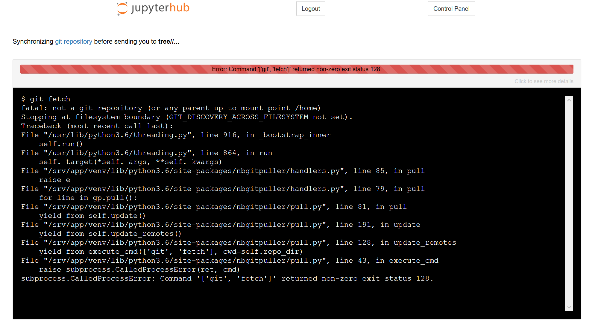

Troubleshooting nbgitpuller#
You may run into different types of errors when you are using the JupyterHub or Jupyter notebooks. The majority of errors come from a few common causes and can be solved using the following methods.
nbgitpuller Link Errors#
nbgitpuller link errors are usually due to one of three issues:
1. The nbgitpuller link was clicked in an incompatible browser (Microsoft Edge)#
Unfortunately, the nbgitpuller software does not support the Microsoft Edge browser. If you click an nbgitpuller link in Edge, you will likely be taken to your datahub.berkeley.edu dashboard, but you won’t see your desired files there.
Solution: open nbgitpuller links in Chrome, Firefox, or Safari
2. The nbgitpuller link was generated incorrectly#
If the nbgitpuller link was not generated correctly, you’ll see a red loading bar with an error message that says “Error: Command ‘[‘git’, ‘fetch’]’ returned non-zero exit status 128.” An example screenshot is below:

Solution: re-generate the nbgitpuller link. Make sure that you’ve filled in the correct Jupyter hub URL, Github URL, branch, and file. Some tips:
URLS should NOT end with forward slashes. “ds-modules” is okay; “ds-modules/” will break
The Git repository url should go to the base repo that contains the materials you want. For example, if you want to link to the “lab01.ipynb” in the fall19 repository of the data-8 organization, the Git URL should be “data-8/fall19”, not “data-8/fall19”
The File to Open needs to include the full path of the file from the base repository. For example, if the “lab01” file is in a folder called “labs”, the File to Open needs to be “labs/lab01”
3. The nbgitpuller link has been used before, and some of the content was changed in both Datahub and Github#
If you make changes to an assignment on Github after students have started working on it, students that click the nbgitpuller link again may see a red loading bar and a message about a merge conflict. This occurs if the instructor and the student both change the same parts of the notebook: nbgitpuller doesn’t know how to integrate the instructor’s changes without overwriting student work, so it refuses to proceed. You can read more about nbgitpuller’s automatic merging behavior here.
Solutions:#
Method 1: The easiest and most conservative solution is to rename the file or folder that contains the incompatible changes, then click the nbgitpuller link again. If the file or folder is renamed to anything else (e.g. “SOC-5-old”), nbgitpuller will clone a fresh copy of the problematic files to the student’s Jupyterhub. They can then copy over any work from the old version of the file.
When you face an error like below, do the following steps

Fig. 33 Here is how the admin dashboard looks like!#
Rename the existing folder where the merge conflict error arose

Fig. 34 Here is the steps required to rename the folder!#
Click on the nbgitpuller link again
Use the newly cloned repository created after nbgitpuller link was clicked
Method 2: If you have command line experience then you can use “git stash” command in terminal to temporarily remove the incompatible changes.
If you are using https://datahub.berkeley.edu then navigate to your file manager which acts as your home page. If you are using other hubs then you can access your file manager by navigating to “Hub URL/user/
Your-Username/tree” which will take you to the home directory. For eg: If my user name is Julia and I want to access my home directory in R hub then the URL to access my home directory will be https://r.datahub.berkeley.edu/user/julia/tree.On the upper right of the page, click the dropdown menu that says “New” and select “Terminal”.

Fig. 35 Here is how you launch terminal#
Navigate to the folder where a) your files are stored and b) you have merge conflict issues
Run
git stashcommand in the terminal and you will see the following output
{kind=link}
Fig. 36 Here is the output from gitstash command#
Access the nbgitpuller link again. You will be able to load the notebooks directly.
The best advice, however, is to avoid making changes to assignments once they’ve been released to students if at all possible.